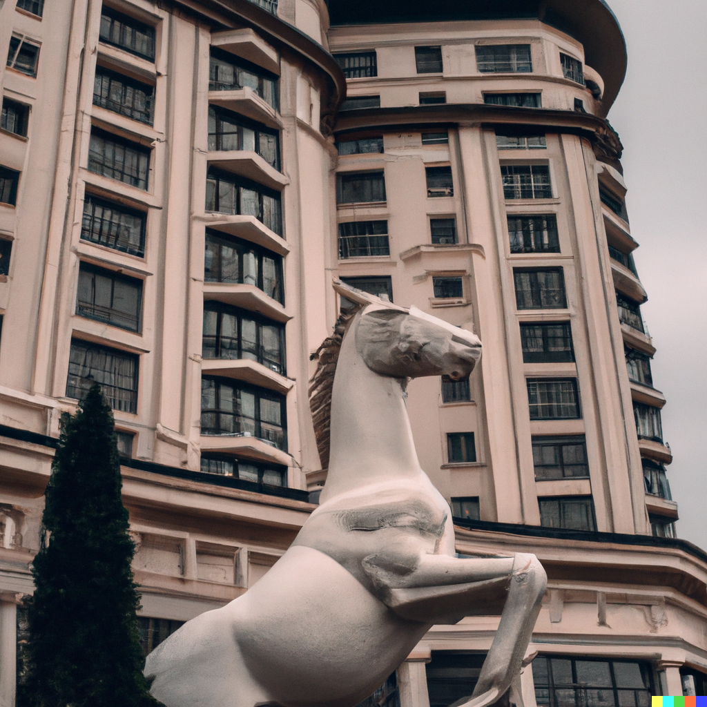

Compétence 1 : Réaliser un développement d'application.

Puissance 4
Lors de la SAE 1.01 de ma première année de BUT Informatique, j'ai été amené à développer un puissance 4 en C qui fonctionnait dans le terminal ou le joueur et une autre personne pouvaient jouer tour a tour
Langages Utilisés : C
Tester le code

Développement d'une application de réservation pour hotel
Lors de la saé 2.01 de cette même année, nous avions pour projet de réaliser en groupe une partie d'une application de réservation de chambre d'hotel réalisé pour l'établissement fictif du Cheval Blanc
Langages Utilisés : Java JavaFX